If you press a specific combination of keys on your keyboard your pc will perform certain actions, there are many of these so called keyboard shortcuts, some will make you more efficient, and others are really not worth mentioning.

When talking about shortcuts there are three different types of keys to talk about. There are the modifier keys, the standard keys and the function keys, each doing their own part in shortcuts
The modifier keys are perhaps the most important keys, there is no shortcut without them. But what are modifier keys? They are the keys at the bottom left of your keyboard: ctrl, win and alt. And as their name suggests, they modify the behaviour of other keys when pressed in addition with them.
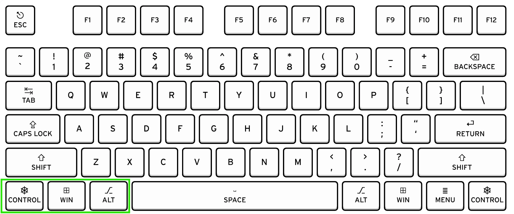
These are quite simple, just the normal letters and numbers
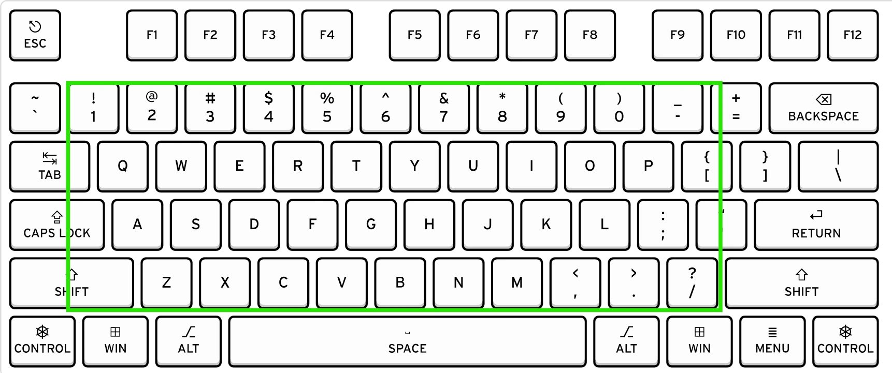
The (most often tiny) keys at the very top of your keyboard. Depending on your keyboard they might also allow you to perform quick actions like turning the volume up or down when pressing the "fn" key.
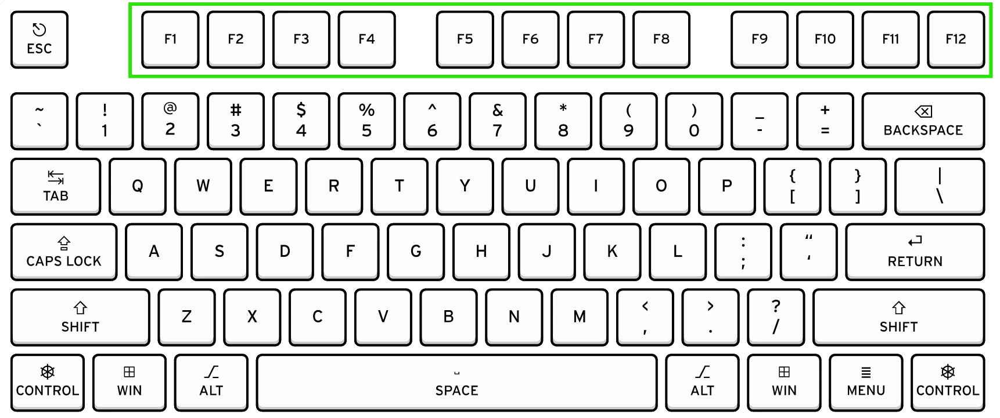
For some this might be painstakingly obvious, for others not so I'll mention it anyways: when performing a shortcut, the modifier key will have to be pressed first, similar to when capitalizing.
In my opinion an absolute must-have, but a shocking amount of people still do these with a right-click. If you are writing a fair amount of stuff, then adapting these will make you many times more efficient.
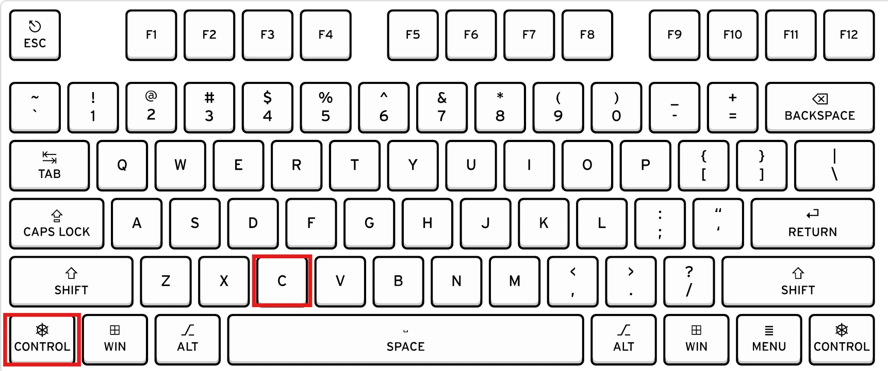
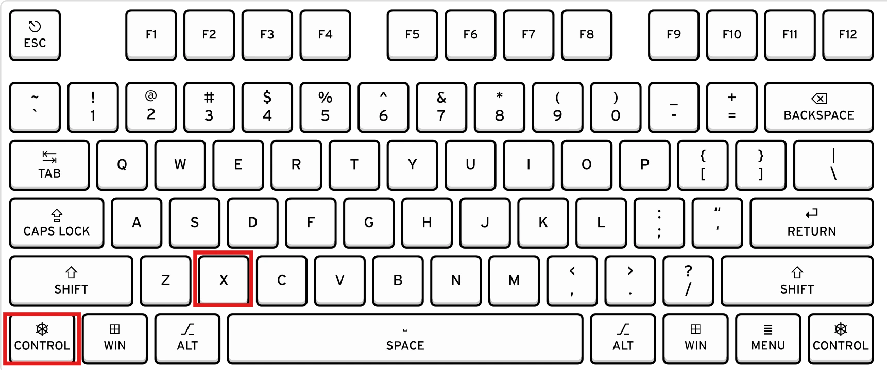
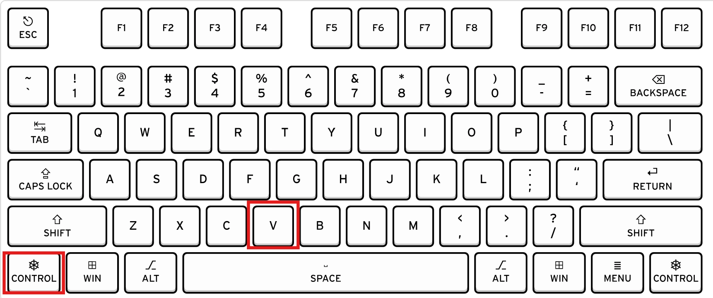
To this day one of my favorite shortcuts, the clipboard memory. You cut one thing you really wanted to keep and then you copy something because you forgot about it, with clipboard history this won't be a problem anymore. After pressing the shortcut for the very first time you will have to activate it. After this you will be able to pull up a menu of all the things you copied in this session. Just simply press on the item and it will get inserted.
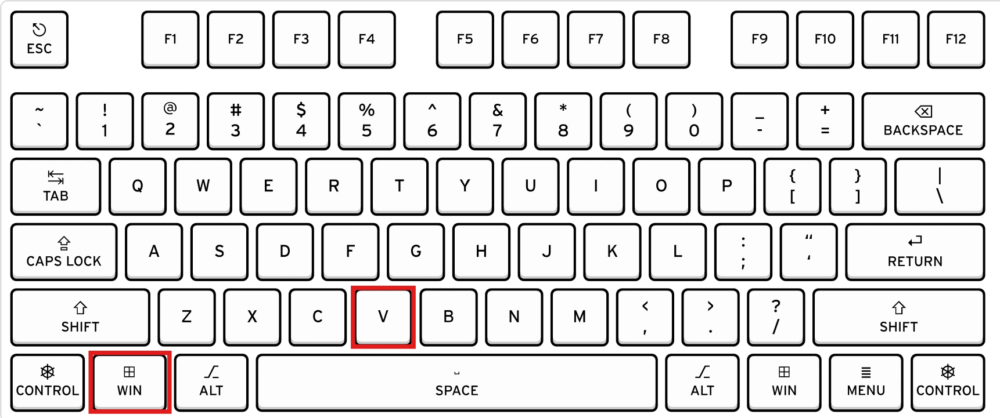
Select a whole document, this shortcut got you covered
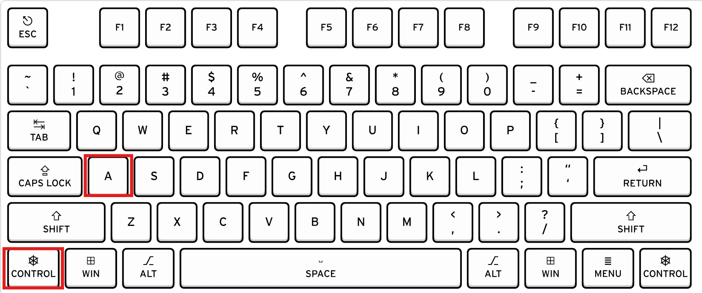
Perhaps one of my most used shortcuts, I don't close a program any other way anymore, nor do I shutdown my computer anymore. This Shortcut will close the active program and if no program is active or all windows are closed, you will get prompted with a Shutdown Window. If you want to shut down your PC, just press enter once that window gets shown.
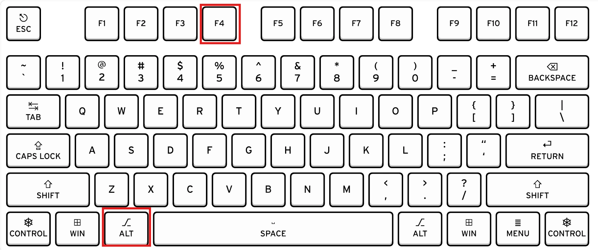
Deleted something you didn't intend, or the opposite: you made too much undo. These shortcuts have you covered, especially since there are programs where this functionality is only available via shortcuts
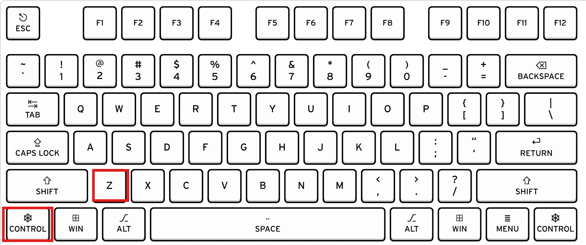
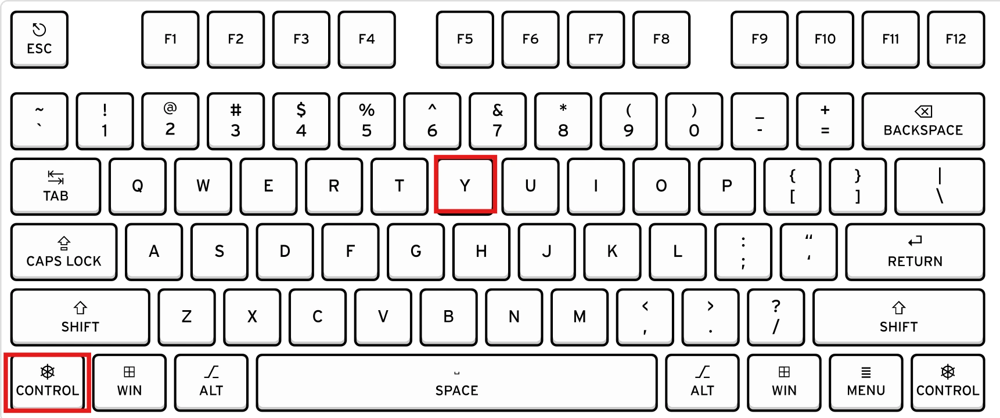
Made A typo and you're much faster rewriting the word or words, with this shortcut you can delete whole words at a time so you will be much quicker
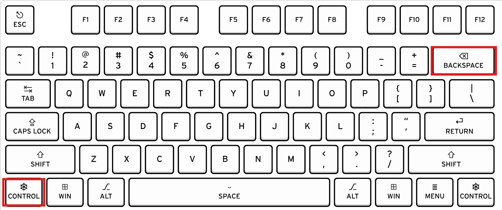
Leaving your pc for just a moment at work or worse at school, just lock you PC and no one especially if you are a teacher will be able to do bad things with your machine while you're away!

If you want to show somebody what's on your screen or you want to save what your seeing, just make a shortcut, after pressing the shortcut you will be able to select which part of your screen should be saved, once selected a notification will pop up which will give you the option to save or share it.
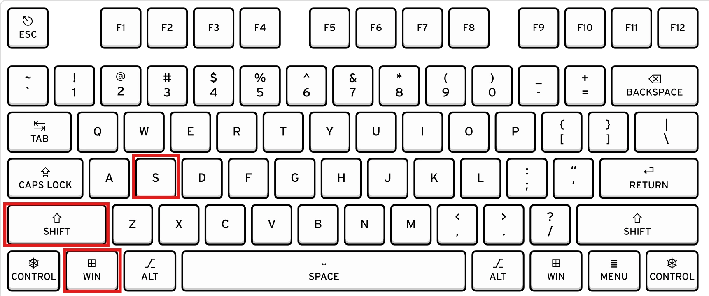
All of the keyboard visualizations of the keyboard shortcuts are adapted versions from Fullsize ANSI US QWERTY keyboard layout for Windows by Tomico used under CC BY-SA 4.0 The adapted versions are licensed under CC BY-SA 4.0 by ferieninsel001.
{kind=link}